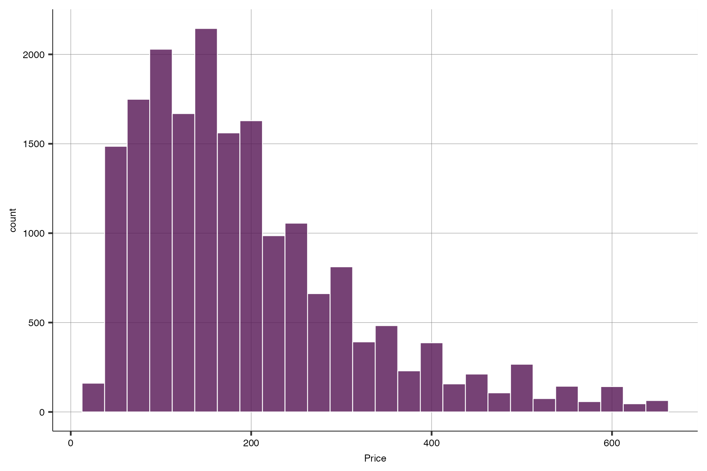
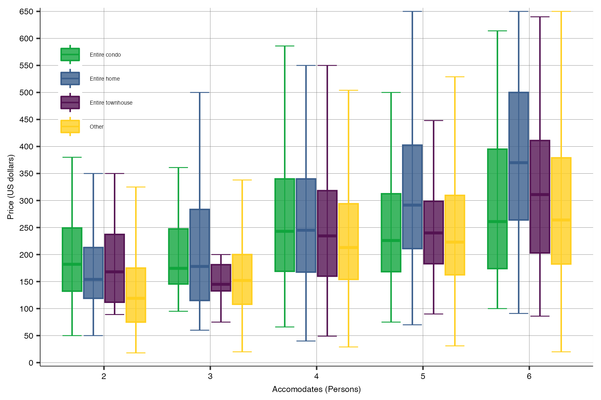
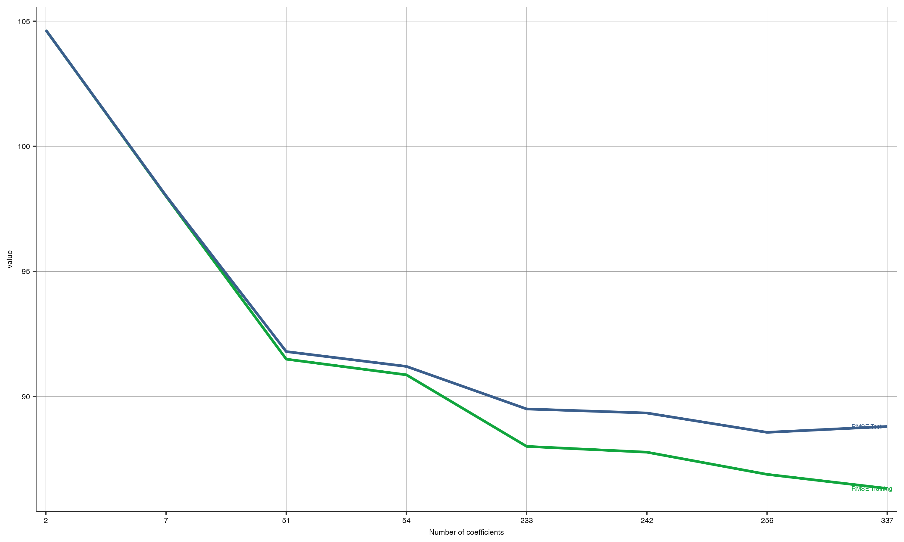
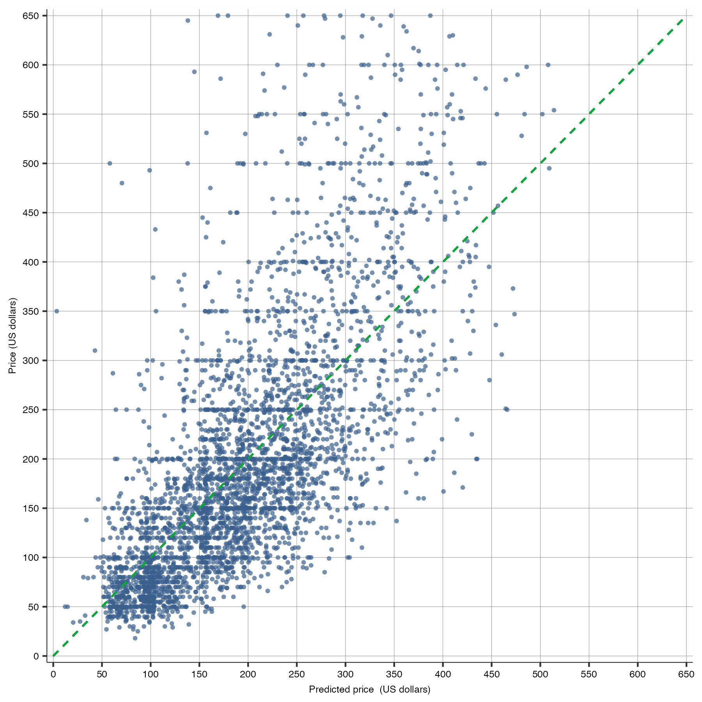

#imputation
data <- data %>%
mutate(
n_bath_count = ifelse(is.na(n_bath_count), median(n_bath_count, na.rm = T), n_bath_count), #assume at least 1 bath
f_bathroom=ifelse(is.na(f_bathroom),1, f_bathroom),
n_beds = ifelse(is.na(n_beds), n_accommodates, n_beds), # bed = accommodates
n_beds2 = ifelse(is.na(n_beds2), n_accommodates^2, n_beds2),
n_bedroom_count = ifelse(is.na(n_bedroom_count), 1, n_bedroom_count), # assume at least 1 bedroom
)Technical Report
Guide through the files
All the codes are located in the r_codes folder
- cleaner_sydney.R The code uploads the raw data, cleans it and saves the cleaned data as airbnb_sydney_cleaned.csv. If you want to explore the data cleaning process please refer to the file.
- regression_sydney.R The code uses the airbnb_sydney_cleaned.csv as an input and performs all the necessary regressions.
- random_forests_boosting.R The code uses airbnb_sydney_cleaned.csv as an input and performs random forest and GBM
Sample Design: Key Decisions
After reviewing the data, I decided to restrict the price variable to be less than or equal to 650 AUD per night which consist of 96% of listings. The main reason is that there are some listing with the unusually high prices (max is 28000 dollars per night). I randomly checked some of them and found that there are considerable number of mistakes. The average daily rental price after filtering is consistent with the approximate average price of 195 AUD per night reported for example by Hosty.
Moreover some of the key variables were imputed as follows:
- In order to improve stability of the model several numerical variables were pooled, see the example code below:
# Pool number of amenities
# table by grouping amenities
table_amenities <- data %>%
group_by(n_amenities_count) %>%
summarise(mean_price = mean(price), min_price= min(price), max_price = max(price), n = n())
data <- data %>%
mutate(f_amenities_count= cut(n_amenities_count, c(0,10,15,200), labels=c(1,2,3), right = F))- As a result of initial cleaning of the data the final dataset consists of 18 709 observations and 48 variables. For more detailed steps and additional graphs please refer to the cleaner_sydney.R file in the r_codes folder


Model Selection
I estimated eight regression models with the following specifications and as reported the Model 4 was chosen as the best model
# Model building: Regression
# Basic Variables
basic_lev <- c("n_accommodates","n_beds","n_bedroom_count", "f_room_type")
# Factorized variables
basic_add <- c("f_bathroom","f_minimum_nights","f_neighbourhood_cleansed")
reviews <- c("f_number_of_reviews","d_host_is_superhost",
"d_host_has_profile_pic","d_host_identity_verified","d_instant_bookable")
# Higher orders
poly_lev <- c("n_accommodates2", "n_amenities_count2", "n_beds2")
# amenities
amenities <- grep("^d_.*", names(data), value = TRUE)
# delete from amenities vector first 3 columns
amenities <- amenities[-c(1:4)]
X1 <- c("f_room_type*d_private_balcony", "f_room_type*d_view","f_room_type*f_neighbourhood_cleansed",
"f_property_type*f_neighbourhood_cleansed")
# Additional interactions of factors and dummies
X2 <- c("d_netflix*f_room_type","d_bathtub*f_room_type", "d_outdoor_furniture*f_room_type")
X3 <- c(paste0("(f_property_type + f_room_type ) * (",
paste(amenities, collapse=" + "),")"))
# Create models in levels models: 1-8
modellev1 <- " ~ n_accommodates"
modellev2 <- paste0(" ~ ",paste(basic_lev,collapse = " + "))
modellev3 <- paste0(" ~ ",paste(c(basic_lev, basic_add,reviews),collapse = " + "))
modellev4 <- paste0(" ~ ",paste(c(basic_lev,basic_add,reviews,poly_lev),collapse = " + "))
modellev5 <- paste0(" ~ ",paste(c(basic_lev,basic_add,reviews,poly_lev,X1),collapse = " + "))
modellev6 <- paste0(" ~ ",paste(c(basic_lev,basic_add,reviews,poly_lev,X1,X2),collapse = " + "))
modellev7 <- paste0(" ~ ",paste(c(basic_lev,basic_add,reviews,poly_lev,X1,X2,amenities),collapse = " + "))
modellev8 <- paste0(" ~ ",paste(c(basic_lev,basic_add,reviews,poly_lev,X1,X2,amenities,X3),collapse = " + "))The following graphs show some of the diagnostics an summary

To see how model predictions compare to the actual values, I plotted the predicted prices of the best model (Model 4) against the actual prices.

As we can see the model dows a good job in predicting low values but it is not very accurate for high values. This is not surprising as it common for linear models to have a problem with predicting extreme values.
I addition to regression models I also estimated a random forest model and GBM model. The codes are reported below:
# GBM -------------------------------------------------------
gbm_grid <- expand.grid(interaction.depth = c(1, 5, 10), # complexity of the tree
n.trees = (4:10)*50, # number of iterations, i.e. trees
shrinkage = 0.1, # learning rate: how quickly the algorithm adapts
n.minobsinnode = 20 # the minimum number of training set samples in a node to commence splitting
)
set.seed(1234)
system.time({
gbm_model <- train(formula(paste0("price ~", paste0(predictors_2, collapse = " + "))),
data = data_train,
method = "gbm",
trControl = train_control,
verbose = FALSE,
tuneGrid = gbm_grid)
})
gbm_model
# Random Forest
# set tuning
tune_grid <- expand.grid(
.mtry = c(8, 10, 12),
.splitrule = "variance",
.min.node.size = c(5, 10, 15)
)
set.seed(1234)
system.time({
rf_model_2 <- train(
formula(paste0("price ~", paste0(predictors_2, collapse = " + "))),
data = data_train,
method = "ranger",
trControl = train_control,
tuneGrid = tune_grid,
importance = "impurity"
)
})
rf_model_2